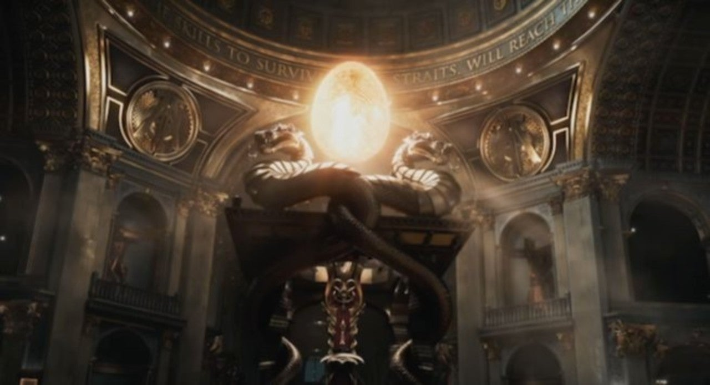

Bande annonce du film
Scénario du film
Cette œuvre de science-fiction se déroule dans le futur en 2045. C’est le chaos sur Terre dû aux problèmes climatiques, à la crise énergétique, la famine, la pauvreté et la guerre. Dans ce monde en déclin, un univers de réalité virtuelle, l’Oasis, a été créée. Il est connecté à travers le monde entier et a été conçu comme un jeu MMORPG. Il est vite devenu une sorte de deuxième réalité pour tous les humains. Ils peuvent être qui ils veulent et faire tout ceux qu’ils rêvent. L’impossible est à portée de leurs mains. C’est une échappatoire à cette vie sombre qui les attendent hors du jeu.
L’Oasis a été imaginée par James Halliday et son ami Ogden Morrow. Mais James décida de rompre tout contact avec sa société et Ogden pour s’occuper du jeu seul. Lors de sa mort, Halliday, à l’aide d’une vidéo, lança le défi à tous les joueurs de retrouver l’Easter Egg. Il l’a caché dans son monde et promis de donner sa société et toute sa fortune à celui qui le retrouvera. Pour cela les joueurs devront réunir trois clés répandues quelque part dans l’Oasis.
Dans ce monde chaotique, Wade Watts, un jeune garçon, vit dans le bidonville de Columbus dans l’Ohio. Passionné par l’Oasis, il y passe le plus clair de son temps avec son avatar Parzival. Fasciné par l’histoire de Halliday, il passe ses journées à fouiller ces souvenirs. Il cherche n’importe quel indice qui le mènerait à l’Easter Egg.
Aperçu de l'Easter Egg
Après de nombreuses recherches, ces efforts ont porté leur fruit. Il récupère la première clé que personne n’a pu avoir avant lors de la course automobile. Mais pendant ce temps, une société, guidé par Sorrento, cherche à s’emparer de l’Oasis pour en faire une machine à publicité. C’est comme cela que débute son histoire pour devenir le héros de l’Oasis. A l’aide de ses amis Sho, Daito et Aech, il va défendre l’Oasis.
Mais échapper aux problèmes du monde réel ne fait que les empirer.
La surutilisation de l’Oasis par la totalité de l’humanité ne fait qu’aggraver la situation actuelle. Les consommations d’énergies liés aux data centers en 2045 doivent être immenses. De nos jours, la technologie et internet sont partout. Donc on peut se demander si nous suivons le même futur que dans le film ?
Vous pouvez aller voir cela dans l'article suivant en cliquant sur le bouton ci-dessous.
Article suivant